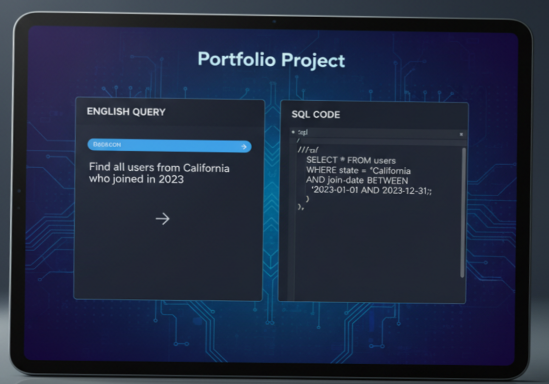

English-to-SQL Query Generator

Project Overview
This AI-powered system converts natural language queries into SQL commands, enabling users to interact with databases without needing SQL expertise. It supports basic SELECT, WHERE, JOIN, and aggregation queries.
Key Features
- Natural Language Processing (NLP) for understanding English queries.
- SQL command generation compatible with MySQL and PostgreSQL.
- Interactive testing interface for user input and results visualization.
- Preprocessing to handle synonyms, numeric data, and date formats.
Technologies Used
Python, NLTK, spaCy, MySQL, Flask (for web interface), JavaScript (frontend interaction)
Back to Projects